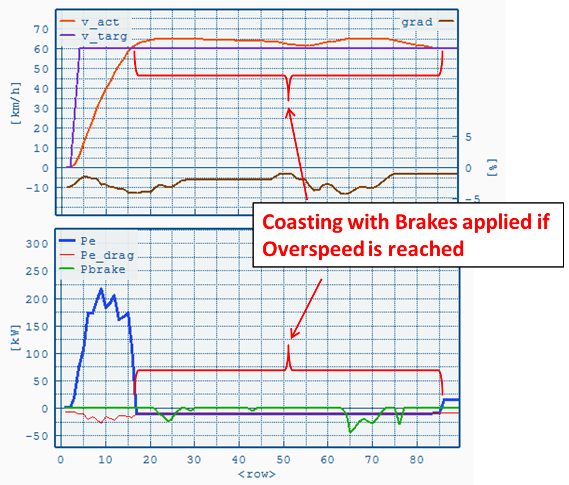
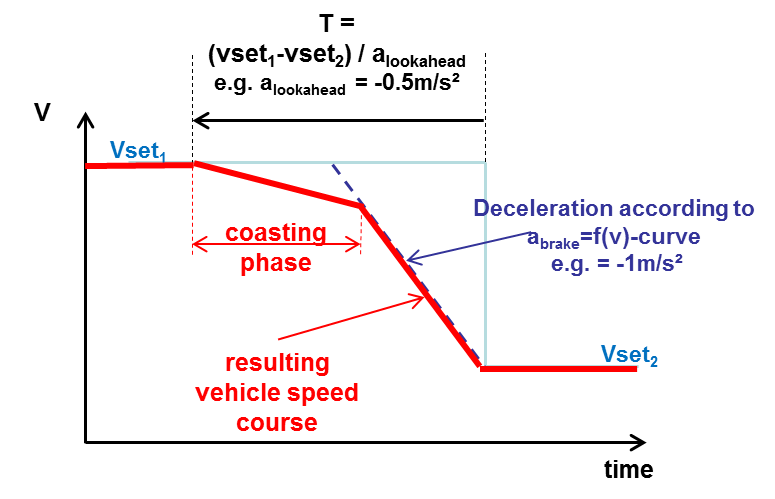

Max.
acceleration and brake curves (.vacc Input File)
Limits vehicle
acceleration and deceleration depending on vehicle speed. If
Look-Ahead Coasting is enabled then the deceleration is applied in the brake phase.
Input File Format
(comma-separated, dot = decimal-mark):
| c vehicle
speed |
Max.
acceleration |
Max.
deceleration |
| c [km/h] |
[m/s2] |
[m/s2] |
| ... |
... |
... |
| ... |
... |
... |
Note: text
lines (header, comments,
etc.) must start
with "c "
 Open file browser
Open file browser.
 Open file
Open file with
GRAPHi or an user-defined tool (see
File
Open Command).
Engine Start/Stop
If enabled the engine will be turned off if:
- Power demand (without Aux) ≤ 0
- Vehicle speed is below Max Speed [km/h]
- Engine was running for at least Min ICE-On Time [s]
Note:
Currently there is not method defined to compensate invalid auxiliary
cycle work when Engine Start/Stop is enabled, i.e. if enabled the total
auxiliary work is less than without Start/Stop
Overspeed / Eco-Roll
Overspeed
If P
wheel < 0: Coasting with brakes not applied for speed < target speed + allowed overspeed
Parameters:
- Minimum Target Speed
- Allowed Overspeed

Eco-Roll
If
Pwheel < 0: Neutral gear, engine idling. Engine- and service- brake
if target speed + allowed overspeed is reached. Normal driving if
target speed + allowed underspeed is reached.
Parameters:
- Minimum Target Speed
- Allowed Overspeed
- Allowed Underspeed
Look-Ahead Coasting
Enables
coasting before each braking phase. Coasting will begin at T seconds
before new lower target speed (see picture below). Braking deceleration
is defined by the
.vacc file. Look-Ahead Coasting is disabled if target speed is below
Minimum Target Speed.Parameters:
- Target Retardation = alookahead
- Minimum Target Speed
Note: If road
gradient > 0 the coasting deceleration will not be affected, i.e.
coasting deceleration is calculated for road gradient=0. This should
prevent the vehicle from decelerating too fast. If road gradient < 0
and P
wheel < 0 coasting is disabled (else the vehicle would accelerate).
